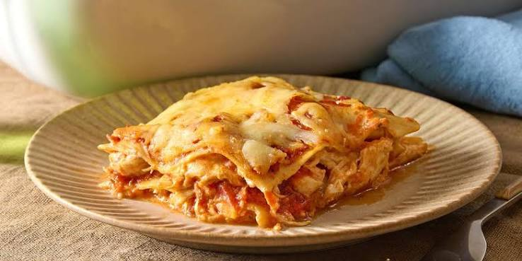

Lasagnes crémeuses au poulet
Pages d'accueil

Description
Ces lasagnes au poulet sont préparées avec de tendres filets de poulet, de
la sauce tomate et une généreuse quantité de mozzarella
pour un résultat savoureux. Tous ceux qui les ont goûtées en sont ravis !
Ingrédient
- 6 feuilles de lasagnes non cuites
- 3 demi-poitrines de poulet désossées et sans peau
- 2 tasses de mozzarella râpée (divisée)
- 1 paquet (225 g) de fromage à la crème ramolli
- ¼ tasse d'eau chaude
- 1 cube de bouillon de poulet
- 1 pot (735 g) de sauce spaghetti